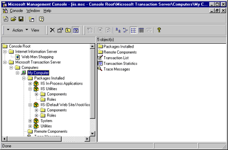

|
| ||
|
| ||
Mary Haggard
Program Manager
Microsoft Corporation
March 16, 1998
The following article was originally published in Site Builder Magazine (now known as MSDN Online Voices).
Microsoft Internet Information Server (IIS) is an Internet file and application server included with the Microsoft Windows NT® Server operating system. IIS version 4.0 is shipped with the Windows NT 4.0 Option Pack, available via free download  or shipped on CD-ROM. It is also included with all new copies of Windows NT.
or shipped on CD-ROM. It is also included with all new copies of Windows NT.
IIS can be used alone as a Web server, or in conjunction with compatible technologies to set up Internet commerce, to access and manipulate data from a variety of data sources, and to build Web applications that take advantage of server script and component code to deliver client-server functionality. The latest information is available on the IIS Web site  . You can also find helpful information in the MSDN Online Web Workshop Server area table of contents.
. You can also find helpful information in the MSDN Online Web Workshop Server area table of contents.
Because of its tight integration with Windows NT Server, IIS guarantees the network administrator and application developer the same security, networking, and administration functionality as Windows NT Server. Above and beyond its use of familiar Windows NT Server tools and functionality, IIS also has built-in capabilities to help administer secure Web sites, and to develop and deploy server-intensive Web applications. In this discussion of IIS 4.0, we'll focus on IIS for the Web administrator and Web developer; I'm assuming that you have a basic grasp of Windows NT Server 4.0 concepts and functionality.
For IIS version 4.0, much attention was focused on improvements to the management tools and log file analysis tools within IIS. We'll profile some of these advancements, including the Microsoft Management Console and other enhancements to Web site administration -- as well as Site Server Express, a tool for analyzing and reporting Web site statistics.
The Microsoft Management Console (MMC) provides one utility for administrators to manage the network environment. With the Management console, network administration tasks can be customized for each administrator. Snap-ins for the MMC provide the ability to administer specific server components.
One of the snap-ins for the MMC is IIS's Internet Service Manager, which gives administrators the ability to create Web and FTP sites, change default settings of a site, assign operators to tasks, start and stop sites, manage transactions, view statistics, manage tasks locally and remotely, and perform all other administrative tasks for the Web server or servers.
Note: All future versions of Windows NT and BackOffice products, as well as many third-party tools, will include MMC snap-ins as their administrative programs.
Each snap-in in MMC includes one or more windows. Each window has two panes. The left pane is called the scope pane and shows a tree view of the namespace, which is the hierarchy of all the items that can currently be managed by MMC. Each item (or node) is one of a variety of objects, tasks, or containers. The tree view of the namespace is similar to a Windows NT Explorer view of files and folders on a hard disk. In a management view, you administer the network by taking action on the contents of the results pane, changing options or executing commands represented by toolbars or command menus.

Figure 1. The management view in the Microsoft Management Console
The MMC can also be extended with snap-ins that allow administrators to manage all network events from a single interface.
IIS also includes a Web-based administration tool that makes remote administration of Web servers possible through use of a Web browser. ISPs will find this tool useful to provide to their customers the ability to remotely manage their own sites. If you decide to use this tool to remotely administer Web servers, the only secure way to ensure safe transmission of data is through Secure Sockets Layer (SSL).
Because IIS is tightly integrated with Windows NT Server, it is able to utilize many of the existing management tools within Windows NT Server -- including User Manager for Domains, Performance Monitor, Network Monitor, Event Viewer, and Simple Network Management Protocol (SNMP) -- to help administer the system.
In IIS 4.0, it is possible to create an unlimited number of Web sites on a single IP address, and to have different configuration information for each one. This has been challenging in the past, because each IP address could have only one domain name. HTTP 1.1 (the newest version of HTTP from the Internet Engineering Task Force  ) allows multiple domain names on one IP address by specifying the host header information that gets a user to the right Web site. For non HTTP 1.1 clients, IIS comes with the support necessary for those browsers to access sites.
) allows multiple domain names on one IP address by specifying the host header information that gets a user to the right Web site. For non HTTP 1.1 clients, IIS comes with the support necessary for those browsers to access sites.
When multiple Web sites are enabled on one machine, IIS 4.0 gives you the ability to manage how much network bandwidth is provided to each Web site. This feature, known as bandwidth throttling, ensures that enough bandwidth is available to each of the sites on the machine. Sites that publish static HTML pages (.htm files) can take full advantage of bandwidth throttling in IIS.
The Windows NT 4.0 Option Pack contains Microsoft Site Server Express, which allows site administrators to analyze server log files and produce reports that detail user behavior, analyze site content and correct errors, and publish Web pages to a server locally and remotely.
If secure transactions are required over the Internet, IIS and Windows NT Server provide support for Secure Sockets Layer 3.0 (SSL), enabling information to be exchanged between clients and servers. SSL 3.0 provides a way for the server to verify who the client is through the use of digital certificates, without requiring a server logon. Through Microsoft Certificate Server (included in the Windows NT Option Pack), IIS issues and manages these certificates, and maps them to user accounts on the machine that give the user the correct level of access to files and services. Windows NT Server and IIS also support basic authentication (sending of unencrypted user names and passwords), Challenge/Response (cryptographic authentication of passwords), and server-gated crypto (128 bit encryption for digital certificates used in transactions with banks and other financial institutions). More on SSL and other security technologies is available on the Microsoft Security Advisor site  .
.
Microsoft provides firewall security, content caching, and management software tools through Microsoft Proxy Server 2.0, an add-on product to Windows NT Server 4.0. The proxy server allows the intranet developer to provide Web access to the corporation, and securely allow portions of the internal network to be viewable to customers. More information is available on the Proxy Server site  .
.
Make your choice of security technology based on your security needs. Remember that security technologies -- especially those that require encryption and decryption -- require processor time on the Web server, and will affect the performance of those servers. Plan accordingly. It also doesn't do you any good to program security features into your Web server environment, and then go home for the weekend and leave the door to the lab unlocked, so plan for security of the hardware itself, as well. For general security information, please see an earlier column in this series, How to Feel Secure.
One of the most exciting features of IIS 4.0 is its powerful application development platform. Active Server Pages (ASP) technology, server components, search and index features, and new transaction-processing capabilities are making development of server-intensive Web applications one of the fastest growing components of Web development. Web developers need access to features that enable commerce, database access, personalization, and dynamic content generation on the Web. Intranet developers also need these features -- along with the ability to full-text search across all documents on their networks.
As you know, multiple components, scripts, and other processes make up most Web applications. More and more, high-end Web applications run and manage business transactions, such as ordering a book, that increasingly involve multiple steps. Credit must be verified, books must be shipped, inventory must be managed, and customers must be billed. Updates for each order must occur in multiple databases on multiple servers. The failure of one of these components should not affect the success or failure of the entire application, and should be handled correctly by the system to ensure successful transactions that persist even if there are system failures.
Transaction support in Windows NT Server and IIS, implemented through Microsoft Transaction Server (MTS) 2.0, tracks the success or failure of complete system processes (such as ordering or accessing and manipulating data) and correctly handles the process of aborting a transaction if necessary. When ASP pages are declared to be transactional, Transaction Server handles the details of creating the defined transactions that occur within the page. Transaction components are activated when needed and deactivated when not in use to save system resources. MTS management is also controlled through the Microsoft Management Console.
Through the use of MTS, organizations can configure Web applications (written with ISAPI or ASP) to persist beyond a single request. These applications are kept alive as processes as long as new requests are coming in -- resulting in significantly better performance over prior alternatives. Applications can be isolated so that in the event of a crash, the Web server and other applications keep running while the misbehaving application is restarted.
Search/Indexing. The search and indexing features within IIS are particularly interesting to the intranet developer, although they work on both Internet and intranet sites. Index Server indexes the full text and properties of documents (including Microsoft Office documents). Users search this index by sending queries through a Web browser. Index Server finds the pertinent documents and returns the results to the user in an HTML page.
Script Debugging. Microsoft Script Debugger 1.0 can be used to debug pages built with ASP technology. More information on the Script Debugger itself is available on the Scripting site  .
.
After you establish Windows NT Server 4.0 and IIS as your Web server configuration, you can add multiple components to to extend the capabilities of the Web server itself. Here are just a few examples.
In addition to these examples, third parties are developing solutions that work with Windows NT Server and IIS to provide a multitude of services that expand the capability of your Web server environment.
Improvements and additions to IIS 4.0 make it a better environment for the Web administrator by providing several new types of administration tools, and for the application developer by adding transaction processing and performance improving functionality. Don't forget that IIS's tight integration with Windows NT Server also provides powerful security, administration, and development functionality.
Since taking early retirement as commander of the Starship Enterprise, Mary Haggard has worked her way through the ranks at Microsoft. As a program manager, she helped launch the Microsoft MSDN Online Web site and the Microsoft Internet Explorer Channel Guide. She is the author of Survival Guide to Web Site Development (Microsoft Press), based on this series of columns. Mary once worked in a paper mill, so she knows pulp when she sees it.
For technical how-to questions, check in with the Web Men Talking, MSDN Online's answer pair.
Did you find this material useful? Gripes? Compliments? Suggestions for other articles? Write us!
© 1999 Microsoft Corporation. All rights reserved. Terms of use.